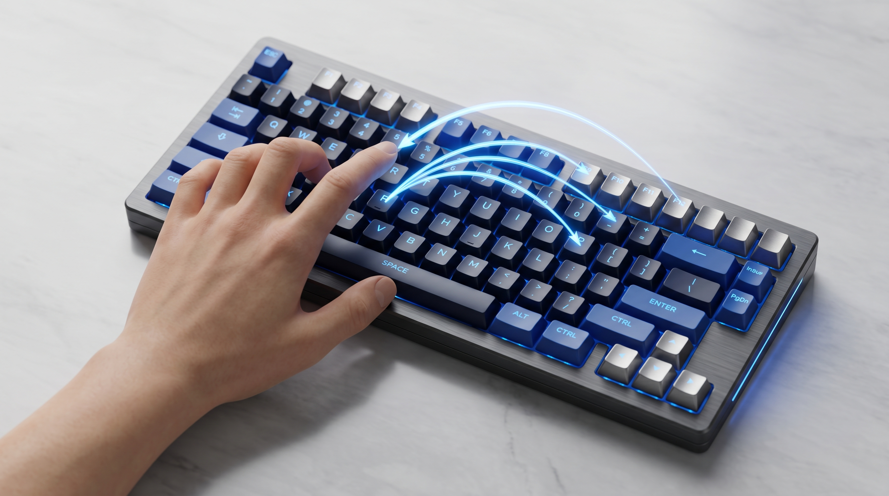
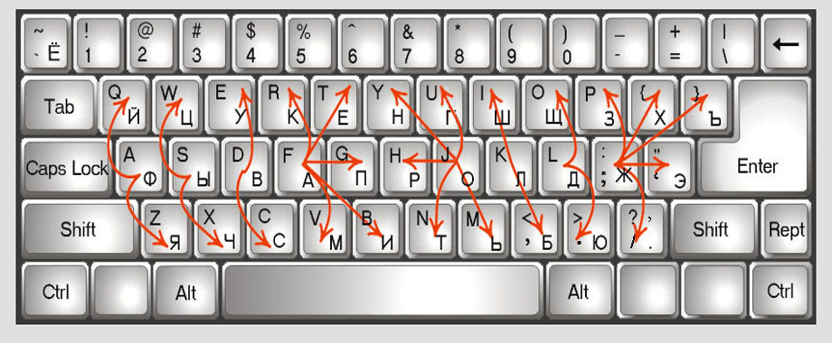
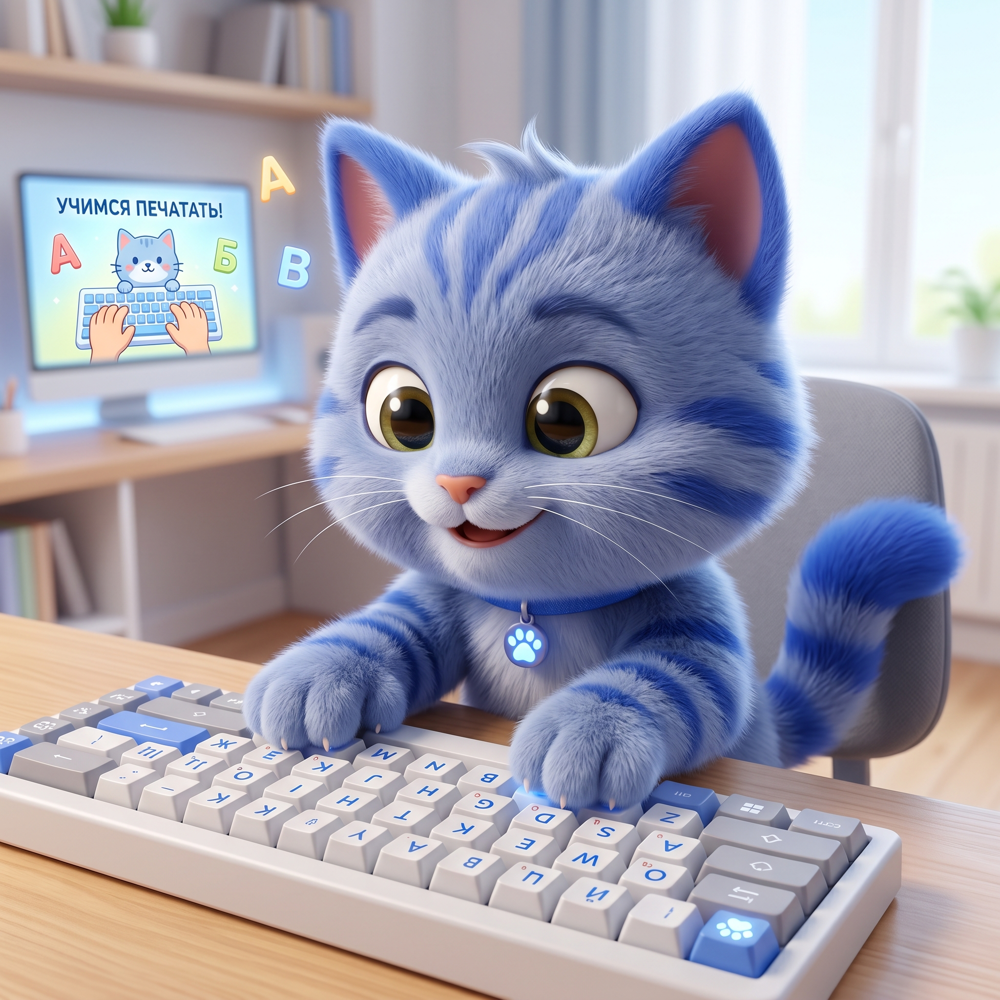

Структурированный курс с нуля, AI-обучение, которое находит твои слабые клавиши, соревнование с онлайн-рейтингом и тест скорости с сертификатом. Интерфейс и упражнения на семи языках — программа сама определяет язык твоей системы. Работает в браузере и офлайн на компьютере.

Палец идёт к клавише дугой — с подворотом кисти, движется не только палец, но и вся кисть
Каждый палец идёт к своей клавише по дуге от домашнего ряда — с подворотом кисти. Это и ставит тренажёр.

Та самая схема из оригинального тренажёра — дуга от домашнего ряда (ФЫВА / ASDF) к каждой клавише: какой палец куда и как движется
От первого нажатия до беглого набора сложных литературных текстов
Интерфейс и упражнения на русском, английском, испанском, немецком, французском, итальянском и португальском. Язык определяется по системе автоматически.
Подсвечивает следующую клавишу, нужный Shift, зоны пальцев и стрелку движения от домашнего ряда. Буква Ё стоит там, где она реально на Mac и Windows.
Уроки по нарастающей: от домашнего ряда (fj dk sl) до заглавных, цифр, знаков и целых предложений. Карта с замками и звёздами за точность.
Генерирует связные слова, насыщенные именно теми буквами, что тебе даются хуже всего. Метрики: Мастерство, Темп и Ритмичность нажатий.
Программа сама находит проблемные клавиши по статистике ошибок, раскрашивает их на схеме и даёт прицельную тренировку именно по ним.
Пять дисциплин — алфавит, слова, цифры, спринт — с медалями и таблицей лучших результатов в реальном времени.
Таймер на 1, 5 или 10 минут, цель по Net WPM, честный подсчёт Gross/Net и точности. В конце — PNG-сертификат с именем и результатом.
Два банка готовых текстов: «Ворон» Эдгара По на всех языках и «Классика» — Пушкин, Шекспир, Сервантес, Кафка, Пруст, Данте, Машаду де Ассис.
Режим без пауз и экранов «готово» — темп не сбивается, как в классической «Стамине». Плюс одноручные режимы для реабилитации или слабой руки.
Выбери оформление под себя — настройки, прогресс и язык сохраняются
Светлая деловая тема, акцент на скорости, рекордах и соревновании. Светлая и тёмная темы.
Тёплая светлая палитра и спокойный темп без давления секундомера.

Игра с уровнями, звёздами и котиком-помощником. Точность важнее скорости.
Версия 2.24.0 · бесплатно · без рекламы · ~2 МБ
Самый быстрый способ попробовать — открыть в браузере, ничего устанавливать не нужно. Работает офлайн на Windows, macOS и Linux.